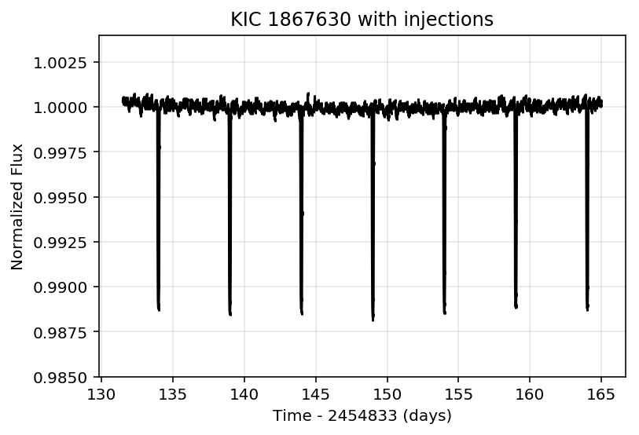

In [1]:
%load_ext autoreload
%autoreload 2
%reload_ext autoreload
from __future__ import print_function
from pprint import pprint
from lightkurve import KeplerTargetPixelFile
import numpy as np
import matplotlib.pyplot as plt
import sncosmo
from astropy.table import Table
%matplotlib inline
In [2]:
tpf = KeplerTargetPixelFile.from_archive(220381074) #KeplerTargetPixelFile
lc = tpf.to_lightcurve(aperture_mask='all') #KeplerLightCurve
#Remove nans and outliers
lc = lc.remove_nans().remove_outliers()
print(lc.flux)
[7916.004 7931.981 7910.661 ... 7843.703 7822.35 7789.4023]
In [3]:
import lightkurve.injection as inj
import lightkurve.lightcurve as lightcurve
In [4]:
model = inj.SupernovaModel(T0=2600, source='hsiao', bandpass='kepler', z=0.5, amplitude=3.e-4)
lcinj = inj.inject(lc, model)
lc.plot(normalize=False)
lcinj.plot(normalize=False);
Fit by eye¶
In [6]:
plt.plot(lcinj.time, lcinj.flux, color='k')
Out[6]:
[<matplotlib.lines.Line2D at 0xa276c4860>]
Make a model to overplot
In [7]:
model_fit = inj.SupernovaModel(T0=2620, source='hsiao', bandpass='kepler', z=0.4, amplitude=4.3e-4)
model_eval = model_fit.evaluate(lc.time) + 7800
In [8]:
plt.plot(lcinj.time, lcinj.flux, color='k', label='Injected Supernova')
plt.plot(lcinj.time, model_eval, color='b', label='Fit by eye')
Out[8]:
[<matplotlib.lines.Line2D at 0xa27740400>]
In [10]:
best_fit_parameters = inj.recover(lc, 'Supernova')
In [11]:
best_fit_parameters
Out[11]:
array([ 2.60500000e+03, 1.00000000e-01, -1.33724011e+00, 7.78978709e+03])
In [12]:
model_min_chisq = inj.SupernovaModel(T0=2605, source='hsiao', bandpass='kepler', z=0.1, amplitude=-1.33724011)
model_eval = model_min_chisq.evaluate(lc.time) + 7789
In [13]:
plt.plot(lcinj.time, lcinj.flux, color='k', label='Injected Supernova')
plt.plot(lcinj.time, model_eval, color='b', label='Fit by Chisq')
Out[13]:
[<matplotlib.lines.Line2D at 0xa27758f60>]
In [ ]:
In [27]:
chisqs = []
#tts = np.arange(7700, 8000, 20)
tts = np.arange(2590, 2635, 1)
for tt in tts:
chisq = inj.recover(lcinj, 'Supernova', [tt, 0.1, 4.34e-04, 7900])
chisqs.append(chisq)
In [28]:
plt.plot(tts, chisqs)
Out[28]:
[<matplotlib.lines.Line2D at 0xa31e0ff60>]
In [ ]:
In [32]:
plt.plot(lcinj.flux_err)
Out[32]:
[<matplotlib.lines.Line2D at 0xa31da8fd0>]
In [ ]:
It doesn’t work!
In [14]:
from scipy.optimize import minimize
In [ ]:
minimize()
In [56]:
def neg_log_like(theta):
T0, z, amplitude, background_flux = theta
if (z>0.5) | (z <0):
return 1.0e99
else:
supernova_model = inj.SupernovaModel(T0, z=z, amplitude=amplitude)
supernova_flux = supernova_model.evaluate(lc.time)
net_model_flux = supernova_flux + background_flux
residual = lc.flux - net_model_flux
return 0.5 * np.sum((residual / lc.flux_err )**2)
In [57]:
initial_guesses = [2605, 0.1, 4.0e-4, 7900.0]
In [58]:
results = minimize(neg_log_like, initial_guesses)
In [59]:
results
Out[59]:
fun: 43854.00386620369
hess_inv: array([[ 1.00000000e+00, 2.19511771e-09, 2.50553931e-06,
1.54219281e-12],
[ 2.19511771e-09, 9.99999232e-01, -8.76106033e-04,
-5.39101859e-10],
[ 2.50553931e-06, -8.76106033e-04, 7.67569047e-07,
-6.15331403e-07],
[ 1.54219281e-12, -5.39101859e-10, -6.15331403e-07,
1.00000000e+00]])
jac: array([ 249.73876953, -3281.15576172, 31255.84521484, 712.0390625 ])
message: 'Desired error not necessarily achieved due to precision loss.'
nfev: 48
nit: 1
njev: 6
status: 2
success: False
x: array([ 2.60500000e+03, 9.99996403e-02, -1.06274393e-05, 7.90000000e+03])
In [ ]:
In [ ]:
In [ ]:
In [ ]:
In [ ]:
In [ ]:
In [72]:
model_eval = model_eval / np.nanmedian(model_eval)
model_synth_fit = lightcurve.SyntheticLightCurve(lc.time, flux=model_eval)
In [73]:
#lcinj.plot()
plt.plot(lc.time, lcinj.flux, color='k')
plt.plot(lc.time, model_synth_fit.flux, color='red', lw=2, ls='-',
alpha=0.8)
#model_synth_fit.plot()
Out[73]:
[<matplotlib.lines.Line2D at 0xa323d3630>]
In [ ]:
In [ ]:
In [ ]:
In [297]:
tpf = KeplerTargetPixelFile.from_archive(1867630, quarter=1)
lc = tpf.to_lightcurve(aperture_mask='all')
#Remove nans and outliers
lc = lc.remove_nans().remove_outliers()
In [298]:
model = inj.TransitModel()
model.add_star(zpt=1.0, rho=1.5, ld1=0.2, ld2=0.4, dil=0.01)
model.add_planet(period=5, T0=134, rprs=.1, impact=0.0)
lc_transit = inj.inject(lc, model)
lc_transit = lc_transit.normalize()
In [299]:
lc_transit.plot()
plt.title('KIC 1867630 with injections')
plt.ylim(0.985, 1.004)
Out[299]:
(0.985, 1.004)

In [300]:
fit = inj.recover(lc_transit, 'Planet')
print(fit)
#T0, period, rprs, impact = theta
[1.35512661e+02 5.00000000e+00 1.00000000e-01 0.00000000e+00]
In [301]:
model_fit = inj.TransitModel()
model_fit.add_star(zpt=1.0, rho=1.5, ld1=0.2, ld2=0.4, dil=0.01)
model_fit.add_planet(period=fit[1], T0=fit[0], rprs=fit[2], impact=fit[3])
model_fit = model_fit.evaluate(lc.time)
In [302]:
plt.plot(lc.time, model_fit, color = 'r', lw=2)
plt.plot(lc.time, lc_transit.flux, color='k')
Out[302]:
[<matplotlib.lines.Line2D at 0x1c390c6e50>]
In [ ]: